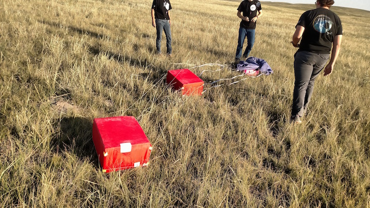

Payload Recovery
When the balloons reach the upper atmosphere they expand to the point of popping or "bursting". The payload then plummets until the parachute is able to slow it down enough for a gentle landing. Using the tracking systems, we were able to recover all of our payloads.